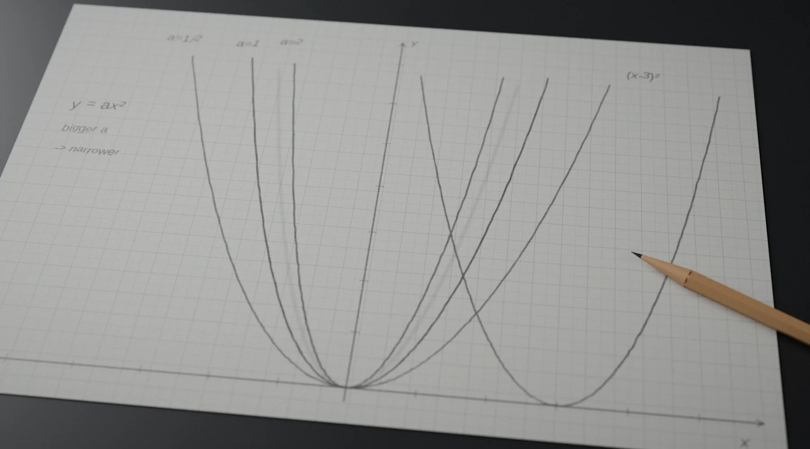

§1A classroom has to choose a starting point课堂必须选择一个共同起点
A teacher can explain a new topic, sketch a framework on the board, demonstrate a formula, assign exercises, review the answers, and assign more exercises. None of those actions is inherently poor teaching. Direct explanation, worked examples, practice, and feedback all matter.
老师可以讲解新主题，在黑板上勾勒框架，示范公式，布置练习，讲评答案，再继续布置练习。这些行为本身都不是糟糕的教学。直接讲解、例题、练习和反馈都很重要。
The constraint is that a classroom has to perform them for many learners at once. A lesson needs one starting point, one approximate pace, and one sequence even though students do not actually arrive at the same point.
真正的约束在于，课堂必须同时面向许多学生完成这些工作。即使学生实际并不处在同一个起点，一节课仍然需要一个共同起点、一种大致相同的节奏和一条统一的教学顺序。
One learner may understand every prerequisite. Another may be missing one concept. Another may have stopped understanding two chapters earlier. The class still moves forward, and a small gap can gradually become the learner's entire experience of the subject.
一个学生可能已经掌握所有前置知识，另一个可能只缺一个概念，还有一个可能从两章以前就已经跟不上。课堂仍然继续向前，而一个很小的知识缺口会逐渐变成这个学生对整门学科的主要体验。
§2Asking for help has a social cost求助本身有社会成本
In theory, a learner who does not understand can ask the teacher. In practice, asking is not free. Raising a hand can mean publicly admitting that everyone else seems to understand something that you do not. Approaching a teacher after class requires crossing a social boundary.
理论上，不理解的学生可以向老师提问。现实中，提问并不是零成本的。举手可能意味着公开承认别人似乎都懂了，而自己没有；课后主动找老师，也需要跨过一道社交边界。
A learner may worry that the question is too basic, that the teacher is busy, that the explanation will start too far ahead again, or that asking for the fourth time will be embarrassing. Sometimes the learner cannot even describe what is missing.
学生可能担心问题太基础、老师太忙、解释又会从太靠后的地方开始，或者第四次再问同一个问题会很尴尬。有时候，学生甚至说不清自己到底缺了什么。
A teacher responsible for an entire classroom may not have the time to reconstruct one student's knowledge from the beginning. That is not necessarily a failure of care. It is also a capacity constraint. So the learner stays quiet, and the lesson continues.
负责整个班级的老师未必有时间从头重建某个学生的知识结构。这不一定意味着老师不关心，而是容量限制。于是学生保持沉默，课堂继续向前。
§3Repeated failure eventually changes the meaning of learning反复失败最终会改变“学习”的意义
At first, the problem may be academic: I do not understand this. After enough repetition, it can become personal: I am bad at this. Then broader: I am bad at learning.
一开始，问题可能只在学习上：“我不懂这个。”重复足够多次之后，它可能变成个人判断：“我不擅长这个。”再进一步变成：“我不擅长学习。”
A student who repeatedly listens without understanding, attempts problems without success, receives poor grades, or is mocked for falling behind is not experiencing learning as progress. Learning becomes associated with confusion, exposure, boredom, and failure.
一个学生如果反复听不懂、做题总失败、成绩不断变差，或者因为落后而被嘲笑，他体验到的学习就不是进步，而会逐渐与困惑、暴露、无聊和失败绑定在一起。
From the outside, the eventual response may look like indifference. But disengagement can also be a protective response to repeated experiences in which effort does not appear to change the outcome. Saying I never cared anyway can be easier than saying I cared, tried, and still failed.
从外部看，最终表现出来的可能像是不在乎。但脱离学习也可能是一种保护性反应：当一次又一次的经历都告诉学生“努力似乎并不能改变结果”时，说“反正我从来就不在乎”往往比承认“我在乎过、努力过，但还是失败了”更容易。
- Confusion困惑a concept or prerequisite is not understood.某个概念或前置知识没有掌握。
- Silence沉默asking for help feels socially expensive or difficult to formulate.求助的社交成本太高，或者难以准确表达问题。
- Accumulation累积new material is built on top of unresolved gaps.新知识不断叠加在尚未解决的缺口之上。
- Failure失败practice increasingly produces evidence of being behind rather than evidence of progress.练习越来越像是在证明自己落后，而不是证明自己在进步。
- Withdrawal退出avoiding the task becomes easier than repeatedly testing a painful prediction.逃避任务，比反复验证一个令人痛苦的预期更容易。
§4Distant consequences are weak rewards遥远的结果往往不是强奖励
Education often responds with long-range incentives: study now to enter a better school, earn stronger qualifications, and find a better job. Those consequences can matter, but they are distant and abstract.
教育常常用长期激励来回应：现在学习，是为了进入更好的学校、获得更好的资格、找到更好的工作。这些结果当然重要，但它们遥远而抽象。
The learner's immediate experience is much closer: I am sitting here now. I do not understand this problem now. Everyone else seems ahead of me now. I am going to fail the next exercise now.
学生眼前的体验却近得多：我现在就坐在这里；我现在就不懂这道题；别人现在看起来都比我快；我现在就要做错下一道练习。
When learning itself produces almost no positive feedback, increasingly severe descriptions of the future may stop working. The learner needs evidence in the present that effort can produce change.
当学习本身几乎不提供正反馈时，再严厉地描述未来后果也可能逐渐失效。学生需要的是当下的证据：努力真的能带来变化。
§5The strongest reward may be visible progress最强的奖励可能是看得见的进步
Positive reinforcement in education does not have to mean badges, points, streaks, praise animations, or gamification. A more powerful reward can be simpler: I can do something now that I could not do twenty minutes ago.
教育中的正向强化不一定意味着徽章、积分、连续打卡、夸奖动画或游戏化。更有力的奖励可以更简单：二十分钟前我还不会的东西，现在我会了。
Suppose a learner is failing quadratic-function problems. Instead of repeating the whole chapter, a tutor discovers that the real gap is an earlier understanding of how parameters change a graph. The tutor goes back, rebuilds that prerequisite, tries a near variation, asks the learner to explain it, and then returns to the original problem.
假设一个学生总是做不好二次函数题。Tutor 不是把整章再讲一遍，而是发现真正的缺口来自更早的知识：学生没有理解参数如何改变图像。于是 Tutor 回退一步，重建这个前置概念，尝试一道相近变式，让学生自己解释，再回到原题。

Something that previously looked impossible now has a path through it. The important change is not one correct answer. It is the learner's prediction about difficulty: I do not understand no longer has to mean I probably never will.
原本看起来完全不可能的题，现在出现了一条可以走通的路径。真正重要的变化不只是得到一个正确答案，而是学生对“困难”的预测发生了变化：“我现在不懂”不再自动等于“我大概永远也不会懂”。
§6“I do not understand” should be a valid input“我不懂”应当是一种有效输入
This may be where AI tutoring has an unusually important advantage. A learner should be able to say: I have no idea. You started too far ahead. I do not understand what that symbol means. You already explained it three times and I still do not get it.
这可能正是 AI 教学一个非常重要的优势。学生应该能够直接说：我完全不会。你讲得太靠后了。我不知道这个符号是什么意思。你已经解释三次了，我还是没懂。
The first promise of AI education may be a place where saying “I do not understand” carries almost no social cost.AI 教育最早能够兑现的承诺，也许是创造一个说“我不懂”几乎没有社会成本的地方。
The system should not become impatient, interpret repeated questions as disrespect, or require the learner to perform confidence before receiving help. Instead, it can move backwards until it finds a stable starting point.
系统不应该变得不耐烦，不应该把重复提问理解成不尊重，也不应该要求学生先表现得自信才配得到帮助。它应当持续向前置知识回退，直到找到一个稳定的起点。
Personalization is therefore deeper than changing a mathematics problem so that it mentions a student's favourite sport. The important question is: where is this learner's actual starting point?
因此，个性化远不只是把数学题里的例子换成学生喜欢的运动。真正重要的问题是：这个学生真实的起点在哪里？
- Current problem当前问题locate the step where progress stopped.找到学习进展停止的那一步。
- Prerequisite前置知识test the concept or skill that step depends on.检查这一步依赖的概念或技能。
- Starting point起点move backward until the learner can work reliably.持续回退，直到学生能够稳定完成任务。
- Rebuild重建advance again with small checks and fading support.通过小步检查和逐渐淡出的支持重新向前。
- Transfer迁移verify that the learner can use the idea without the same scaffold.确认学生在没有同样脚手架时也能使用这个概念。
§7A Tutor also shapes the emotional experience of learningTutor 也在塑造学习的情绪体验
An educational AI that only knows how to provide explanations is incomplete. Sometimes the correct next action is not another explanation. A learner may arrive frustrated, ashamed, angry, anxious about an exam, or convinced that further effort is pointless.
一个只会提供解释的教育 AI 是不完整的。有时候，正确的下一步不是再解释一次。学生可能带着挫败、羞耻、愤怒、考试焦虑来到这里，甚至已经认定继续努力毫无意义。
Patience is instructional. Allowing mistakes is instructional. Reducing shame around not knowing is instructional. Helping someone turn I am stupid into we found the specific thing that is missing is instructional.
耐心本身具有教学意义。允许犯错具有教学意义。降低“不知道”的羞耻感具有教学意义。帮助一个人把“我很笨”改写成“我们找到了具体缺失的那一块”，同样具有教学意义。
That does not mean an AI tutor should pretend to be a therapist. Ordinary learning frustration and emotional support are different from serious mental-health crises, abuse, severe bullying, or risk of self-harm. Those situations require clear safeguarding boundaries and appropriate human support. AI can be a low-friction first point of contact without becoming a closed final point of contact.
这并不意味着 AI Tutor 应该假装自己是治疗师。普通的学习挫败与情绪支持，和严重心理危机、虐待、严重霸凌或自伤风险不是一回事。后者需要清晰的安全边界和合适的人类支持。AI 可以成为低摩擦的第一接触点，但不应成为封闭的最终接触点。
§8AI education may enter through the space outside schoolAI 教育可能先从学校之外进入
AI education may not enter the classroom first. A classroom is an institutional environment, so introducing an AI Tutor immediately raises questions about teacher roles, school policy, devices, privacy, assessment, safety, classroom management, and responsibility.
AI 教育未必会首先进入课堂。课堂是制度化环境，引入 AI Tutor 会立刻带来关于教师角色、学校政策、设备、隐私、评估、安全、课堂管理和责任的问题。
Outside the classroom, the first proposition can be much simpler: here is somewhere you can ask the questions you were afraid to ask. Students can use it after school, families can observe whether it helps, and learners can become familiar with individualized tutoring before a school has to redesign the classroom around it.
在课堂之外，第一个产品命题可以简单得多：这里有一个地方，你可以问那些原本不敢问的问题。学生可以课后使用，家庭可以观察它是否有帮助，学生也可以在学校真正围绕它重构课堂之前，先熟悉个性化教学。
A plausible adoption path is private learning support, then structured after-school tutoring, then teacher-visible support, then supervised school use, and only later deeper classroom integration. Acceptance can grow from repeated useful experience rather than from claims about transforming education.
一种合理的采用路径可能是：先做私人学习支持，再做结构化课后辅导，再到教师可见的支持，然后进入受监督的校内使用，最后才是更深度的课堂整合。接受度可以来自一次次真实有用的体验，而不是来自“改变教育”的宏大主张。
§9The goal is not dependence on the Tutor目标不是让学生依赖 Tutor
There is an obvious danger. A system that always makes the learner feel better by doing difficult work for them can produce pleasant interactions without producing learning.
这里有一个明显风险：如果系统总是替学生完成困难工作来让学生感觉更好，它可能制造愉快的交互，却没有制造真实学习。
Support therefore has to preserve agency. The Tutor should help the learner re-enter the task, not permanently remove the task. The important progression is: I cannot do this; I can do this with help; I can do this with less help; I can do this alone; I can use it somewhere new.
因此，支持必须保留学生的主动性。Tutor 应当帮助学生重新进入任务，而不是永久把任务拿走。真正重要的进展是：我做不到；在帮助下我能做到；减少帮助后我也能做到；我可以独立做到；我还能在新的地方使用它。
- 01I cannot do this我做不到
- 02I can do this with help在帮助下我能做到
- 03I can do this with less help减少帮助后我也能做到
- 04I can do this alone我可以独立做到
- 05I can use it somewhere new我还能在新的地方使用它
The success condition is not that the student enjoys talking to the AI. It is that the student increasingly needs the AI less for things they have already learned.
成功标准不是学生喜欢和 AI 聊天，而是对于已经学会的内容，学生越来越不需要 AI。
§10Education should make progress perceptible教育应该让进步变得可感知
A scalable AI Tutor could eventually diagnose misconceptions, select exercises, adapt explanations, monitor practice, preserve evidence of mastery, and coordinate with teachers. But one of its earliest contributions may be simpler.
一个可扩展的 AI Tutor 最终也许能够诊断错误概念、选择练习、调整解释、监控练习、保留掌握证据并与教师协同。但它最早带来的价值可能更简单。
It can create a learning environment in which ignorance is not embarrassing, help is consistently available, starting points can differ, and progress is small enough to be noticed.
它可以创造一种学习环境：不知道并不丢人，帮助随时可得，每个人可以从不同起点开始，而进步小到足以被自己看见。
For a learner who has spent years experiencing education mainly as evidence of failure, that may be where learning begins again.
对于一个多年把教育主要体验成“失败证据”的学生来说，学习也许正是从这里重新开始。